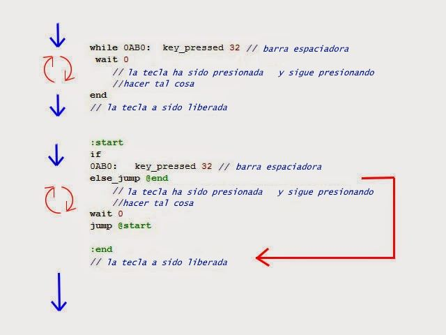
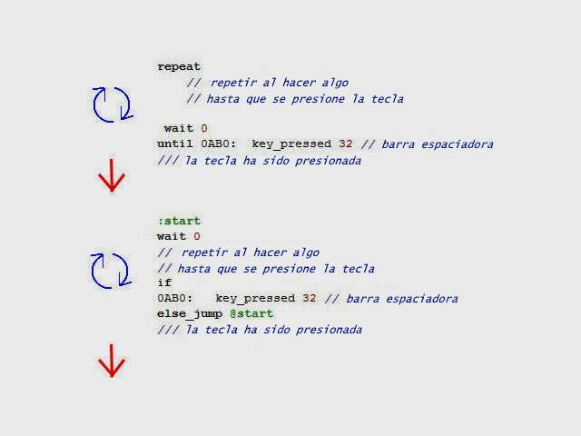
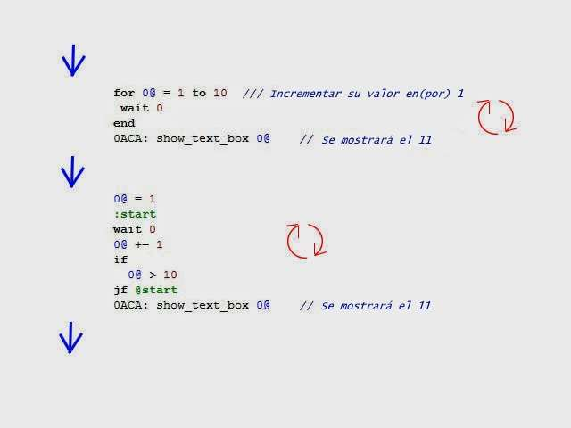
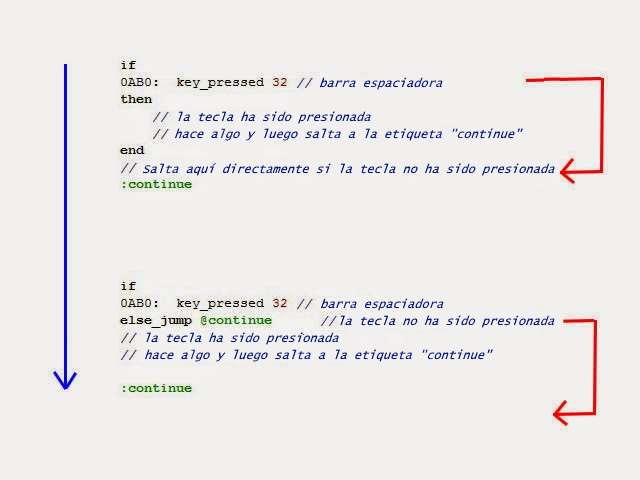

Sanny Builder tiene dos tipos de sintaxis:
- Bajo Nivel de Estructura.
- Alto Nivel de Estructura.
Las diferencias entre ambos son:
- Uno usa etiquetas y el otro no.
- El codigo esta mas limpio en la Estructa de Alto Nivel
- Es mas legible en Estructura de Alto Nivel
Estructura de Bajo Nivel, usa:
:label - else_jump @label - jf @label - jump @label
Y la Estructura de Alto Nivel, usa:
while true - end while - end repeat - until for - end if - then - end if - then - else - end
Ahora, voy a mostrarles como usar la Estructura de nivel alto en lugar de
la Estructura de nivel bajo.
Por ejemplo;
El Comando: while true - end
Lado
Izquierdo: Nivel de Alta Struct
Lado Derecho: Nivel
de Baja Struct
.jpg)
Las lineas rojas, indican el Flujo del Comando: while - end
Comando: while -
end
Parte Superior: Nivel
de Alta Struct
Parte Inferior: Nivel
de Baja Struct

Las lineas azules, indican el
flujo/lectura del juego.
Las lineas rojos, indican la nueva direccion del
flujo/lectura (momentaneamente) a causa de un proceso.
Comando: repeat - until (repetir - hasta que)
Parte Superior: Nivel
de Alta Struct
Parte Inferior: Nivel
de Baja Struct

.jpg){kind=link}
Las lineas azules,
indican la nueva direccion del flujo/lectura del juego.
Las
lineas rojos,
indican el flujo/lectura del juego(momentaneamente)
Comando: for - end
(para - final)
Parte Superior: Nivel de Alta
Struct
Parte Inferior: Nivel de Baja
Struct

{kind=link}
Las lineas azules,
indican la nueva direccion del flujo/lectura del juego.
Las
lineas rojos,
indican el flujo/lectura del
juego(momentaneamente)
Como podemos ver, el
proceso se repetirá (en este caso) 10 veces,
luego mostrara el numero y continuara
Comando: if - then - end (si - entonces - final)
Parte
Superior: Nivel de Alta Struct
Parte
Inferior: Nivel de Baja Struct

{kind=link}
Las lineas azules,
indican la nueva direccion del flujo/lectura del juego.
Las
lineas rojos,
indican el flujo/lectura del juego(momentaneamente)
Comando: if - then - else -
end(si - entonces - de lo contrario-
final)
Parte Superior: Nivel de Alta
Struct
Parte Inferior: Nivel de Baja
Struct
.jpg)
Las lineas azules, indican la nueva dirección
del flujo/lectura del juego.
Las lineas rojos, indican el flujo/lectura del
juego(momentáaeamente)
Ya no podría ser más
simple.
Espero te
guste ;)
Espero te sea de tu ayuda.
Pagina
OFICIAL de donde salio la informacion:
http://j16d.blogspot.com/2014/05/sanny-builder-syntax.html
creditos
del tutorial, a su respectivo dueño. Yo solo lo adapte
:3